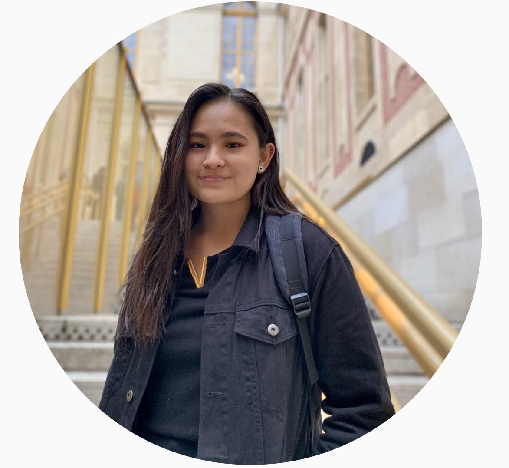

About Me
I am a learning experience designer who is passionate about integrating my creativity, computer, and analytical skills. I care about cultivating a world where people understand the interdependence of science, technology, and society. I am currently looking for opportunities in learning experience design, especially as it pertains to science education.
Background
Professionally, I have a background in higher education administration, non-profit management, STEM education, and financial data analysis. I earned my undergrad in Microbiology and am currently working on a graduate degree in Instructional Design and Technology.